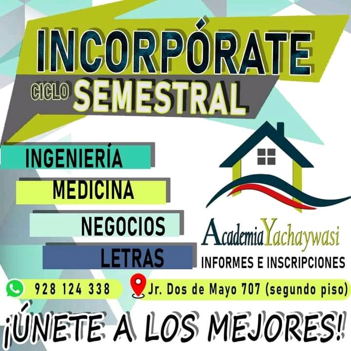
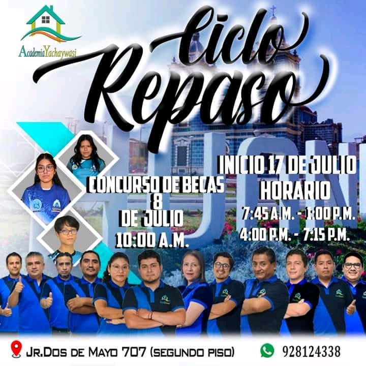
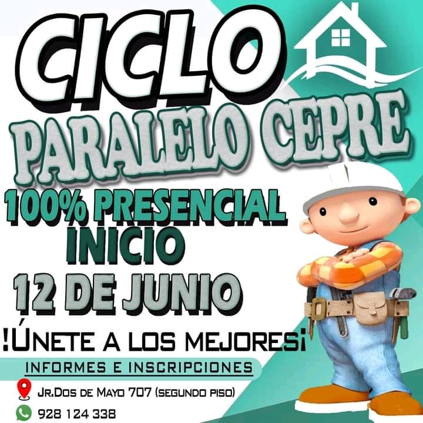
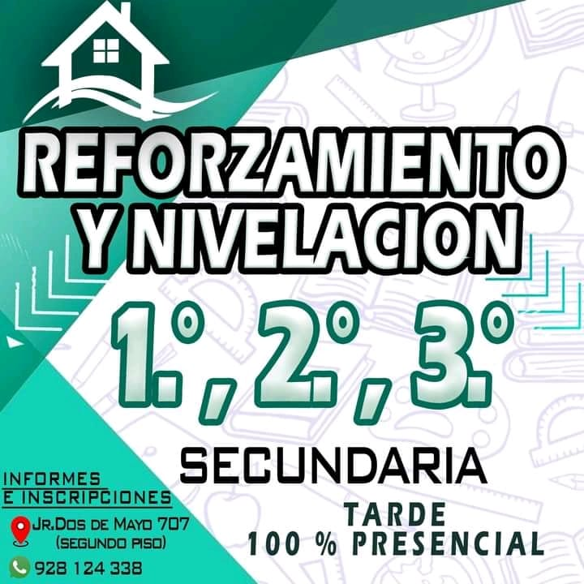
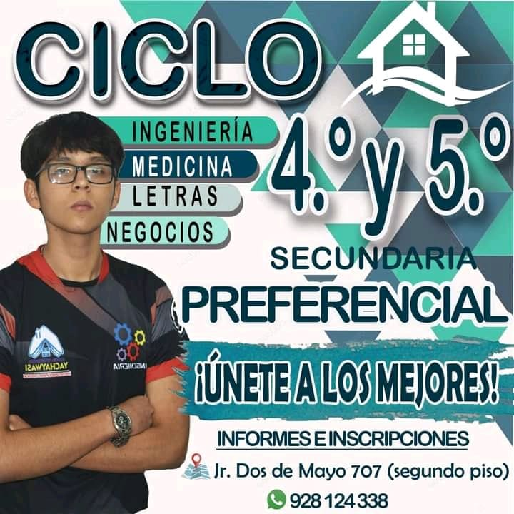
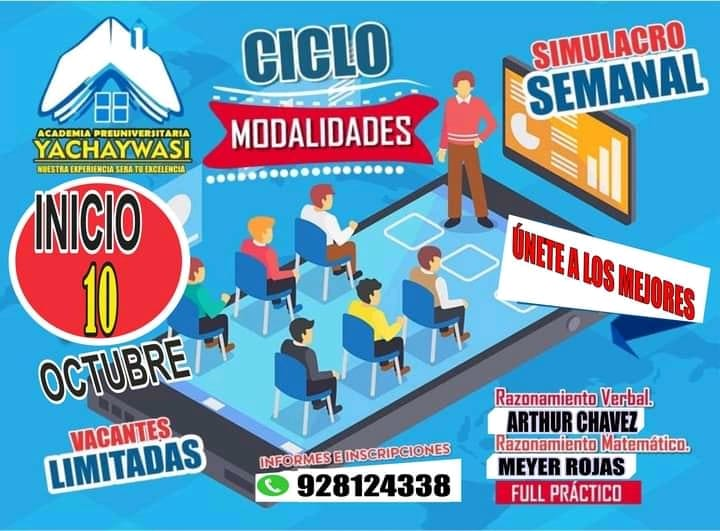
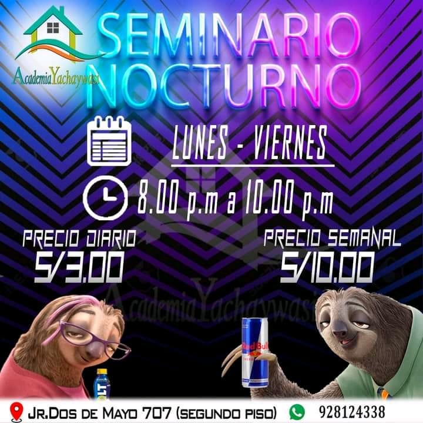
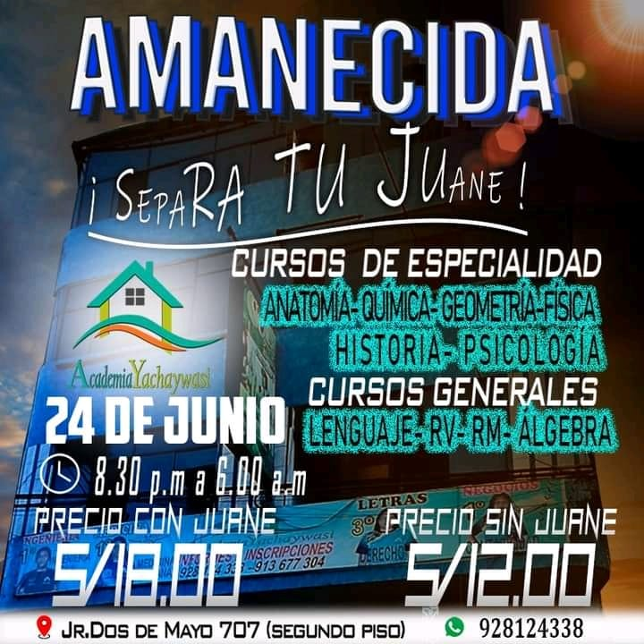

TODOS LOS CICLOS DISPONOBLES

Ciclo Semestral
Ciclo para estudiantes que culminaron sus estudios de secundaria basica y aspiran una vacante en el examen de admision
Ver fotos

CICLO REPASO
Ciclo para los estudiantes que esten a puertas de dar examen de admision y obtener una vacante
Ver fotos

Ciclo Paralelo a CEPRE
Ciclo para los estudiantes que estan en la Cepre y esten nivelados para dar su examen
Ver fotos
CICLOS PARA NIVELACION Y PREFERENCIAL

CICLO REFORZAMIENTO
Reforzamiento para alumnos de 1, 2 , 3 er año de educacion secundaria
Ver fotos

CICLO PREFERENCIAL
Ciclo para estudiantes de 4 Y to Año que postulan a la Universidad y alcanzar una vacante
Ver fotos
CICLOS MODALIDADES, CICLOS NOCTURNOS Y AMANECIDAS

CICLO MODALIDADES
Ciclo para estudiantes , que se preparan para dar un examen de RV y RM
Ver fotos

CICLO NOCTURNO
Ciclo para estudiantes para repasar temas de cada dia
Ver fotos

AMANECIDAS
Ciclo de fin de semana para el mejoramiento de los estudiantes
Ver fotos
{kind=link}
{kind=link}
{kind=link}
{kind=link}
{kind=link}
{kind=link}
{kind=link}